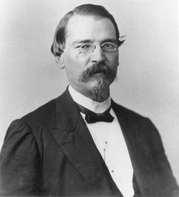
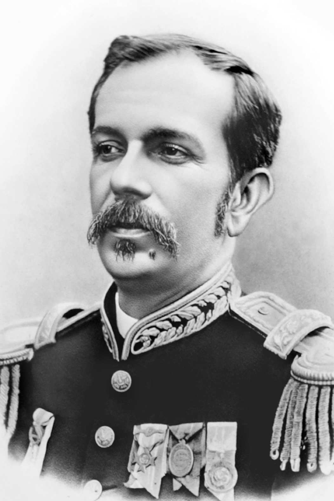
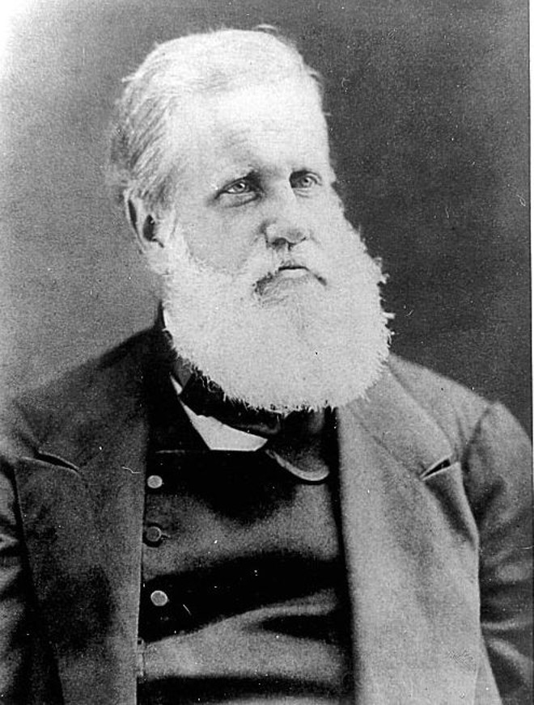
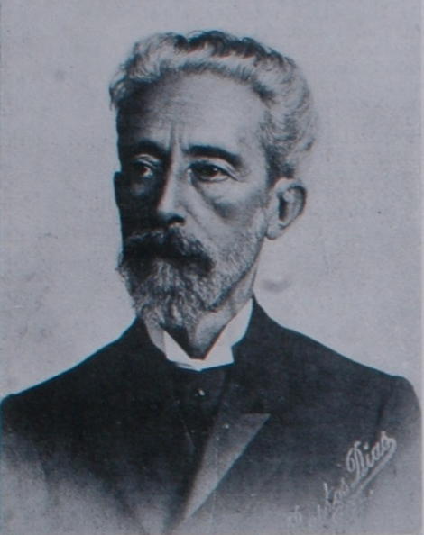

História
A Proclamação da República do Brasil foi um movimento político-militar que ocorreu em 15 de novembro de 1889, na cidade do Rio de Janeiro, então capital do Império do Brasil. O evento resultou na queda da monarquia constitucional parlamentarista, chefiada por Dom Pedro II, e na instituição de um regime republicano presidencialista, liderado inicialmente pelo marechal Deodoro da Fonseca.
Contexto histórico
Durante o Segundo Reinado (1840–1889), o Brasil viveu um período de relativa estabilidade política e prosperidade econômica. No entanto, nas últimas décadas do governo de Dom Pedro II, o Império passou a enfrentar uma série de crises políticas, sociais e econômicas que fragilizaram o regime monárquico.
Entre os principais fatores que contribuíram para a queda do Império, destacam-se:
Crise militar
Após a Guerra do Paraguai (1864–1870), os militares ganharam destaque político e prestígio social. No entanto, sentiram-se desvalorizados pelo governo imperial, que buscava limitar sua influência na política. As tensões entre o Exército e o Império aumentaram, especialmente entre oficiais influenciados pelas ideias positivistas, que defendiam a modernização do Estado e a adoção de um regime republicano.
Questão religiosa
A Igreja Católica também entrou em conflito com o governo imperial. O regime do padroado, que concedia ao imperador o poder de interferir nos assuntos da Igreja, gerou insatisfação no clero. A chamada Questão Religiosa (1872–1875) enfraqueceu a aliança tradicional entre Igreja e Estado.
Questão abolicionista
A Abolição da Escravidão, oficializada pela Lei Áurea em 13 de maio de 1888, representou um marco humanitário, mas provocou forte descontentamento entre os fazendeiros e elites rurais, que perderam sua principal fonte de mão de obra sem indenização. Muitos desses antigos aliados da monarquia passaram a apoiar o movimento republicano.
Crise de sucessão
Dom Pedro II, já idoso e doente, não possuía herdeiros homens. Sua filha, a princesa Isabel, era a sucessora natural, mas enfrentava resistência de parte da elite por ser mulher e casada com um príncipe francês, Gaston de Orléans, o Conde d’Eu. Essa incerteza sucessória minou ainda mais a estabilidade do Império.
O movimento de 15 de novembro
O golpe republicano ocorreu na manhã de 15 de novembro de 1889. Oficiais do Exército, reunidos no Campo de Santana (atual Praça da República), sob o comando do marechal Deodoro da Fonseca, depuseram o Visconde de Ouro Preto, chefe do gabinete ministerial do Império.
Inicialmente, Deodoro acreditava que apenas destituiria o governo, mas a mobilização militar rapidamente evoluiu para a derrubada da monarquia. Sob pressão dos republicanos civis e militares, foi proclamada a República dos Estados Unidos do Brasil.
O ato foi quase sem resistência. Dom Pedro II, informado dos acontecimentos, aceitou pacificamente a deposição e foi exilado com sua família para a Europa. Em 16 de novembro, embarcou no navio Alagoas rumo a Portugal, declarando em sua despedida:
“Aos meus amigos, digo adeus; aos inimigos, o perdão; e a todos, o desejo de paz e felicidade.”
Consequências
Com a proclamação, foi instaurado um governo provisório, chefiado por Deodoro da Fonseca, que governou até a promulgação da Constituição de 1891, responsável por instituir oficialmente a República Federativa Presidencialista.
Entre as principais mudanças imediatas, destacam-se:
A separação entre Igreja e Estado;
A adoção de um novo símbolo nacional, com a bandeira verde e amarela e o lema “Ordem e Progresso”;
A substituição da denominação “Império do Brasil” por “República dos Estados Unidos do Brasil”.
O período subsequente ficou conhecido como Primeira República (1889–1930), caracterizado pelo domínio político das oligarquias regionais e pela forte influência das elites agrárias.
Legado
A Proclamação da República marcou uma transição pacífica de regime, sem grandes confrontos armados, mas representou uma mudança profunda na estrutura política brasileira. Apesar de o novo governo prometer modernização e liberdade, o poder continuou concentrado nas mãos de poucos grupos.
O evento simboliza o fim do regime monárquico e o início da construção de um Estado republicano, que ainda levaria décadas para se consolidar plenamente.
Personagens

Marechal Deodoro da Fonseca
Marechal do Exército
Líder do movimento militar que depôs o governo imperial. Proclamou oficialmente a República e tornou-se o primeiro presidente do Brasil.

Benjamin Constant Botelho de Magalhães
Major do Exército; professor da Escola Militar
Ideólogo da Proclamação. Influenciou os militares com as ideias positivistas (Ordem e Progresso) e foi o principal articulador intelectual do golpe.

Marechal Floriano Peixoto
Oficial superior do Exército
Segundo no comando do movimento. Deu apoio militar a Deodoro e, depois, tornou-se vice-presidente e segundo presidente do Brasil.

Dom Pedro II
Imperador do Brasil
Chefe do regime deposto. Aceitou pacificamente a queda do Império e partiu para o exílio.

Visconde de Ouro Preto
chefe do governo imperial
Último primeiro-ministro do Império. Foi deposto pelos militares na manhã de 15 de novembro.

Quintino Bocaiúva
Jornalista e político republicano
Articulador civil do movimento. Participou da propaganda republicana e ajudou a redigir o manifesto do novo regime.

Rui Barbosa
Jurista e político liberal
Participou da conspiração e, após o golpe, foi nomeado ministro da Fazenda no governo provisório, ajudando a organizar a nova estrutura republicana.
Documentos
🗞️ 1. Manifesto Republicano (1870)
Data: 3 de dezembro de 1870
Autoria: Redigido por Quintino Bocaiúva e publicado no jornal A República, em São Paulo.
Conteúdo:
Foi o primeiro documento oficial do movimento republicano brasileiro.
Defendia o fim da monarquia e a adoção de um regime republicano e federativo.
Criticava o poder concentrado nas mãos do imperador e pedia maior autonomia para as províncias.
Importância:
Marco inicial do Partido Republicano Paulista (PRP) e da propaganda republicana no Brasil.
Lançou as bases ideológicas que influenciariam os militares e civis republicanos nas décadas seguintes.
⚔️ 2. Atos do Movimento Militar de 15 de novembro de 1889
Data: 15 de novembro de 1889
Autoria: Redigido por oficiais do Exército sob liderança do marechal Deodoro da Fonseca e Benjamin Constant.
Conteúdo:
Documento proclamando oficialmente a República e depondo o governo imperial.
Declarava extinto o poder moderador e o Conselho de Ministros, instaurando um Governo Provisório Republicano.
Importância:
É o ato formal da Proclamação da República.
Marca o fim do Império do Brasil e o início da República dos Estados Unidos do Brasil.
🏛️ 3. Decreto nº 1 – Proclamação Oficial da República
Data: 15 de novembro de 1889
Assinatura: Marechal Deodoro da Fonseca, como chefe do Governo Provisório.
Conteúdo:
Declarava o Brasil uma “República Federativa”.
Nomeava os ministros do Governo Provisório.
Estabelecia que as províncias passariam a ser estados federados, com autonomia.
Importância:
Primeiro documento legal da República.
Base do novo regime até a promulgação da Constituição de 1891.
📘 4. Manifesto do Governo Provisório à Nação Brasileira
Data: 17 de novembro de 1889
Autoria: Redigido por Quintino Bocaiúva, Rui Barbosa e Benjamin Constant.
Conteúdo:
Explicava à população as razões da queda do Império e os princípios do novo regime republicano.
Defendia a manutenção da ordem pública e a transição pacífica.
Afirmava que a República era o caminho natural do progresso nacional.
Importância:
Funcionou como uma declaração de legitimidade do novo governo perante o povo e o mundo.
Consolidou o discurso de que a Proclamação havia sido um ato racional e patriótico, não uma revolução violenta.
⚖️ 5. Constituição da República dos Estados Unidos do Brasil (1891)
Data: 24 de fevereiro de 1891
Autoria: Elaborada pela Assembleia Constituinte convocada pelo Governo Provisório; fortemente influenciada por Rui Barbosa.
Conteúdo:
Instituiu oficialmente a República Federativa Presidencialista.
Estabeleceu a separação entre Igreja e Estado, o sufrágio masculino universal (exceto analfabetos) e os três poderes (Executivo, Legislativo e Judiciário).
Importância:
Foi a primeira Constituição republicana do Brasil.
Consolidou juridicamente o novo regime político iniciado em 1889.